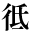
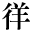
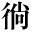
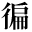

|  | 1_84_31.gif |
●芥川龍之介『あの頃の自分の事』 ●夏目漱石『思い出す事など』 ●夏目漱石『硝子戸の中』 ●夏目漱石『三四郎』 ●夏目漱石『博士問題とマードック先生と余・マードック先生の『日本歴史』・博士問題の成行』 ●夏目漱石『明暗』 ●夏目漱石『門』 |
|  | 1_84_32.gif |
●泉鏡花『絵本の春』 ●泉鏡花『婦系図』 ●泉鏡花『雛がたり』 ●泉鏡花『薬草取』 ●泉鏡花『夜叉ヶ池』 ●内田魯庵『灰燼十万巻（丸善炎上の記）』 ●長塚節『長塚節歌集 下』 ●正岡子規『読書弁』 |
|  | 1_84_33.gif |
●泉鏡花『絵本の春』 ●泉鏡花『婦系図』 ●泉鏡花『雛がたり』 ●泉鏡花『薬草取』 ●泉鏡花『夜叉ヶ池』 ●内田魯庵『灰燼十万巻（丸善炎上の記）』 ●長塚節『長塚節歌集 下』 ●正岡子規『読書弁』 |
|  | 1_84_34.gif |
●宮沢賢治『四又の百合』 |